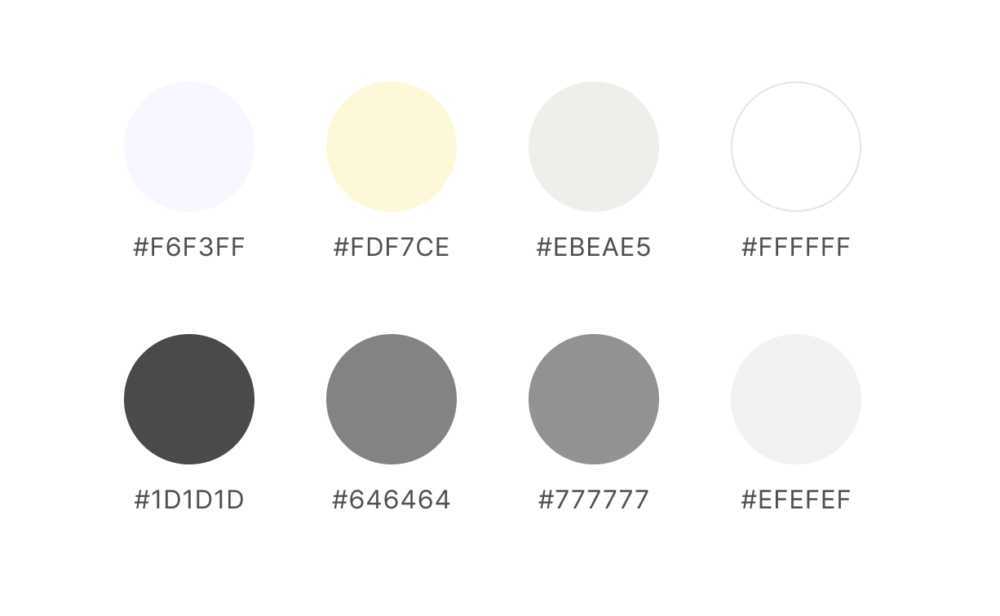
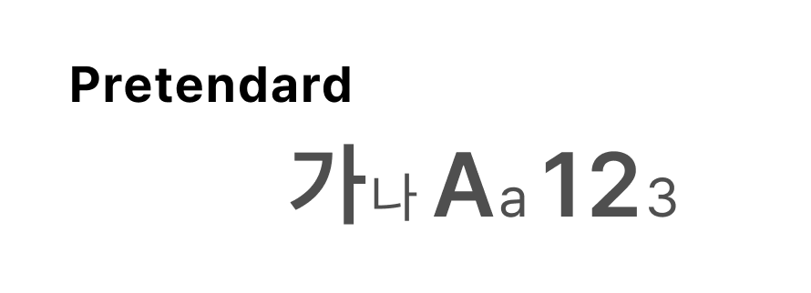
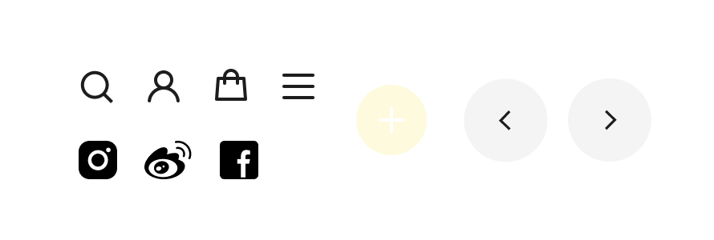
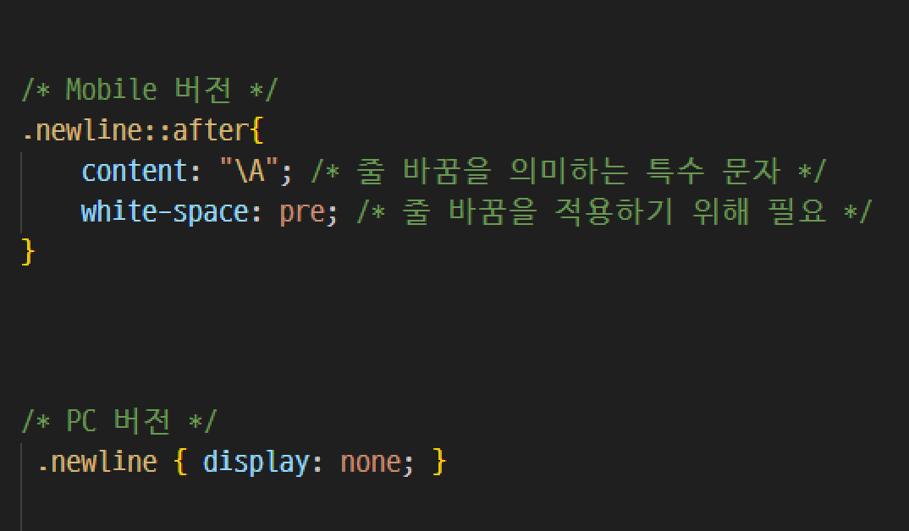
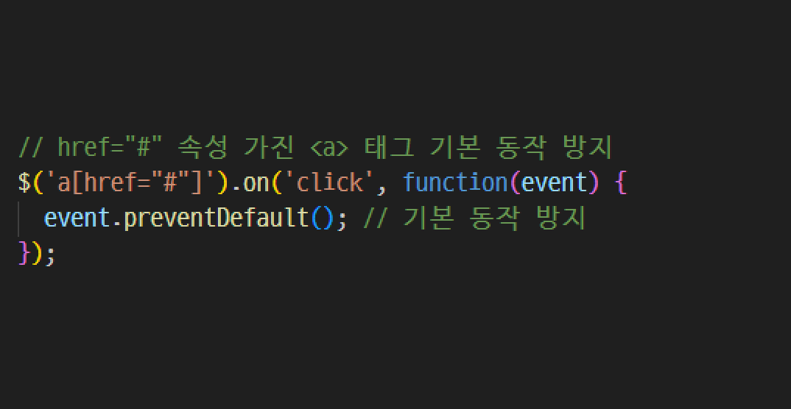

-
Responsive Site
Tamburins
24.10 - 24.12 I Individual Project
#MediaQueries #Swiper
Goal
Project Goal
- 단일 프로모션 중심에서 벗어나, 다양한 콘텐츠를 담은 첫 화면 구성
- 다양한 기기에 최적화 된 반응형 웹 사이트 구현
- MediaQueries 이용 능력 향상
Publishing
Publishing
- MediaQueries를 이용한 반응형 웹페이지 구현
- CSS 애니메이션으로 자동 슬라이딩 텍스트 구현
- 가상 요소(::after) 활용으로 시각적 구성을 개선
- 슬라이더 구현 (Mobile: 버튼으로 아이템 전환 PC: 마우스오버로 슬라이더 표시)
Style Guide
-
UI Vision
탬버린즈, 단순함과 아름다움의 교차점
-
Keywords
-
미니멀
콘텐츠에 집중할 수 있도록
불필요한 요소 배제 -
감각적
고해상도 비주얼로 시각적
몰입감과 감각적인 경험 선사 -
예술적
대담한 이미지와 창의적인
레이아웃으로 예술성 표현
-
-
Color Palette
 -
-
Typography
 -
Icons

-
Resolution
-
 Issue
Issue글자를 계속 움직이게 할 수 있을까?
- 글자를 흐르는 것처럼 표현하기 위해 <marquee> 태그를 사용으나, 웹 접근성과 표준 준수 측면에서 적합하지 않은 요소라 대신할 수 있는 방법을 찾아야함
Solution애니메이션 속성으로 구현해보자!
- CSS 애니메이션 적용: @keyframes와 animation 속성을 활용하여 텍스트가 반복적으로 이동하는 (흐르는) 효과 구현
-
Issue
모바일과 PC의 줄바꿈이 다른데?
- 동일한 HTML 구조에서 줄바꿈이 모바일과 PC에서 다르게 표현되어야함
Solution가상 요소와 미디어쿼리를 활용해보자!
- HTML: 줄바꿈 적용해야 할 부분에 .newline 클래스 추가
- 모바일 CSS: 가상요소(::after)에 줄바꿈 특수문자(\A)를 추가하고, 이를 적용하기 위해 white-space:pre; 속성 사용
- PC CSS: 줄바꿈 제거 위해 .newline 요소를 display:none;으로 숨김
-
Issue
<a>를 클릭하면 위로 올라가서 방해되는데?
- href=”#” 사용 시, 기본 동작이 페이지 상단으로 이동하는 것이라 UI에 방해됨
Solutionevent.preventDefalut()로 해결해보자!
- $(‘a[href=#]’): href=”#”를 가진 모든 <a> 태그 선택
- .on(‘click’, ...) 클릭 이벤트 발생 시 동작을 지정
- event.preventDefalut(): 브라우저의 기본 동작(페이지 상단 이동) 차단
Review
Takeaways
-
이번 프로젝트를 통해 콘텐츠 구성, 반응형 웹 디자인, 자바스크립트 및 제이쿼리 활용, 사용자 중심 설계 능력을 종합적으로 향상시킬 수 있었습니다.
리서치 과정에서 브랜드 아이덴티티를 표현할 이미지와 문구를 선택하는 것에 많은 시간을 투자하여 주어진 기간 내 모든 기능을 구현하지 못한 점은 아쉬움으로 남았지만, 시간 관리와 우선순위 설정의 중요성을 배울 수 있는 계기가 되었습니다.